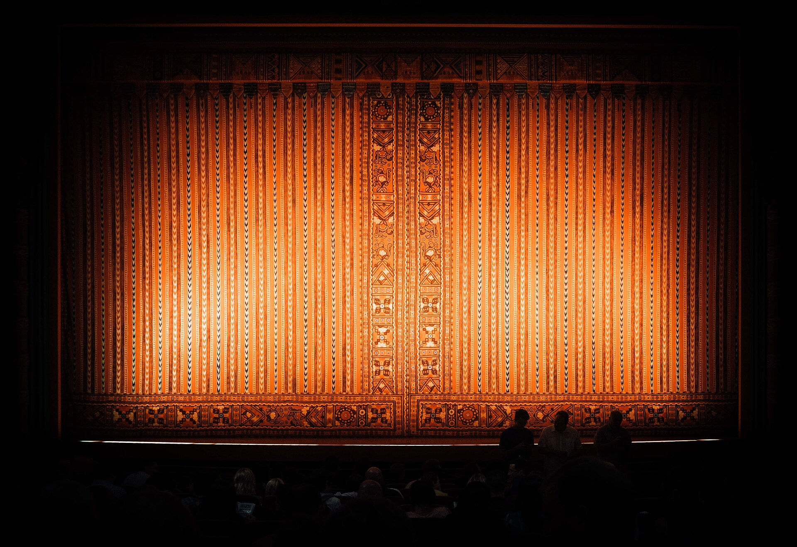
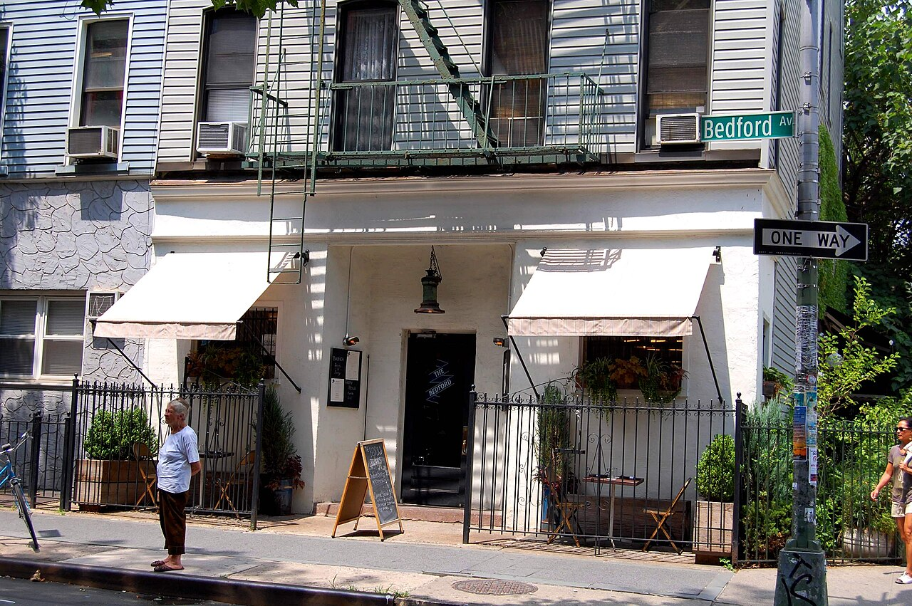
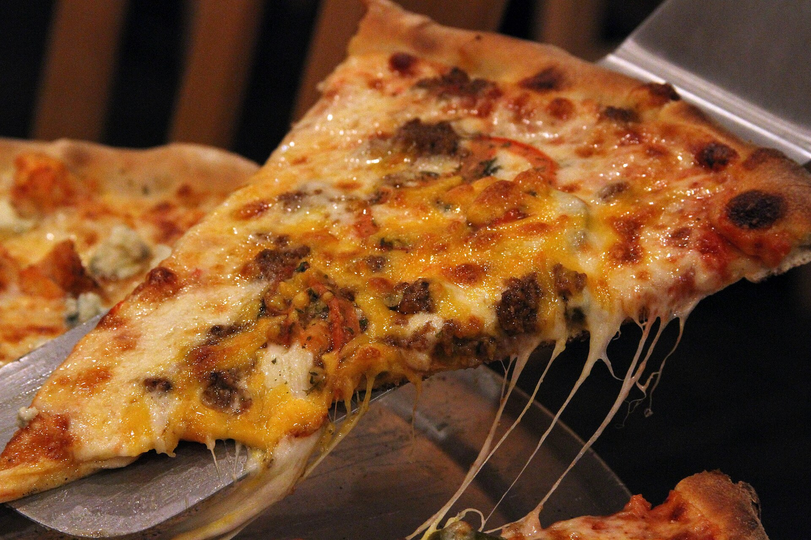
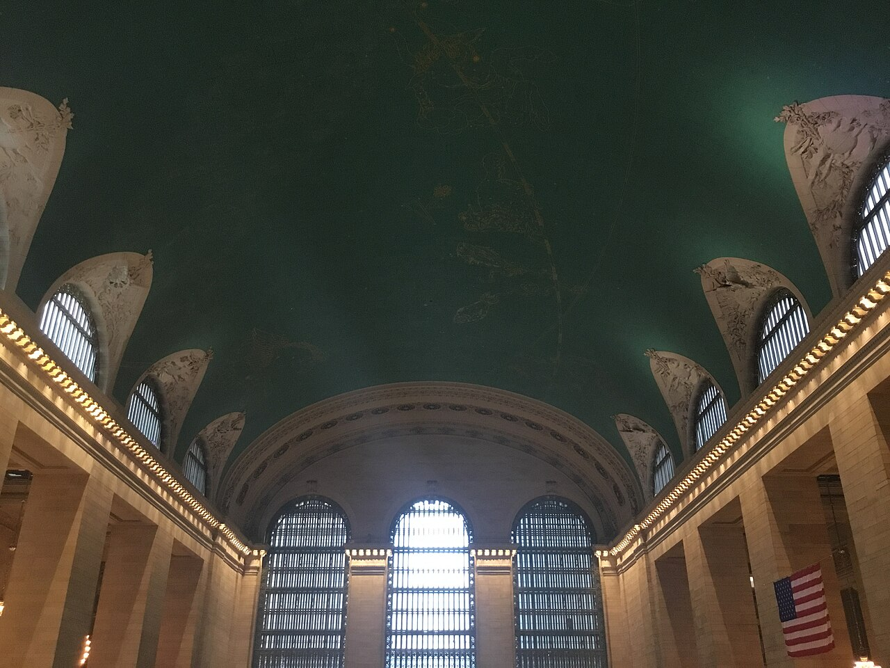
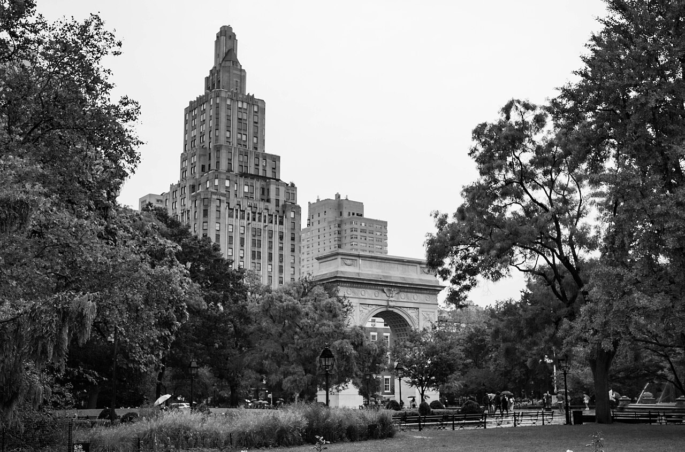
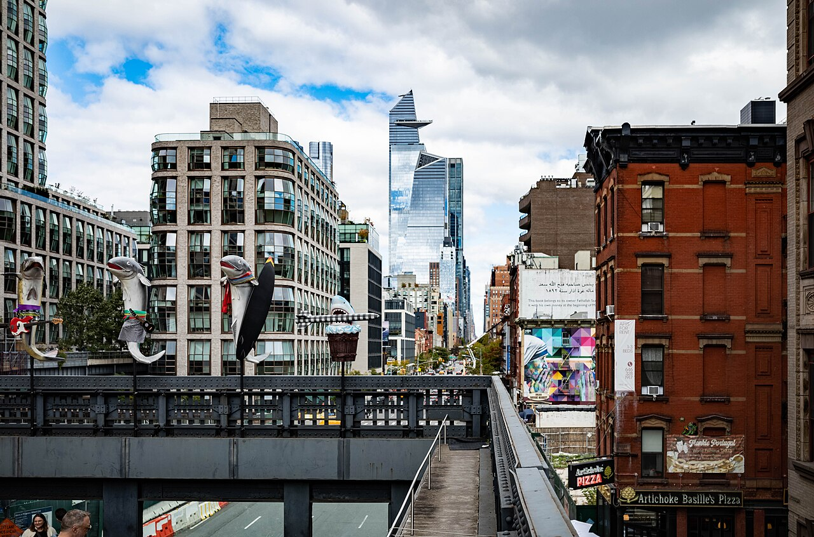
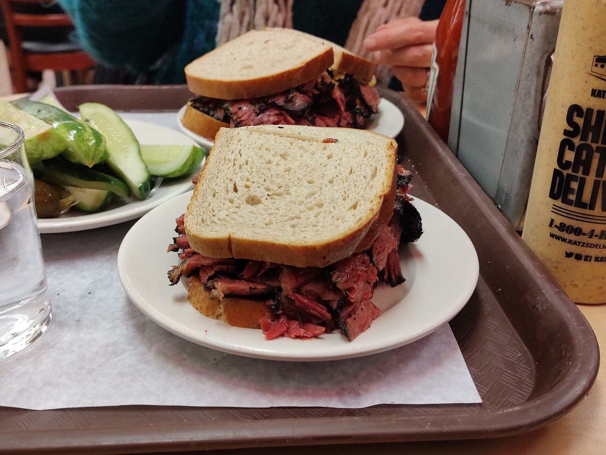
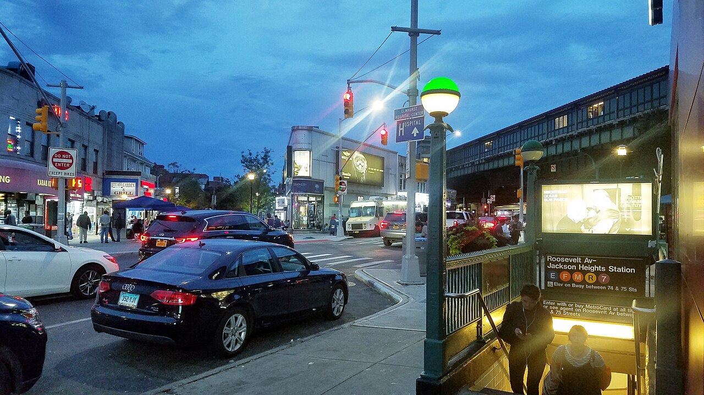
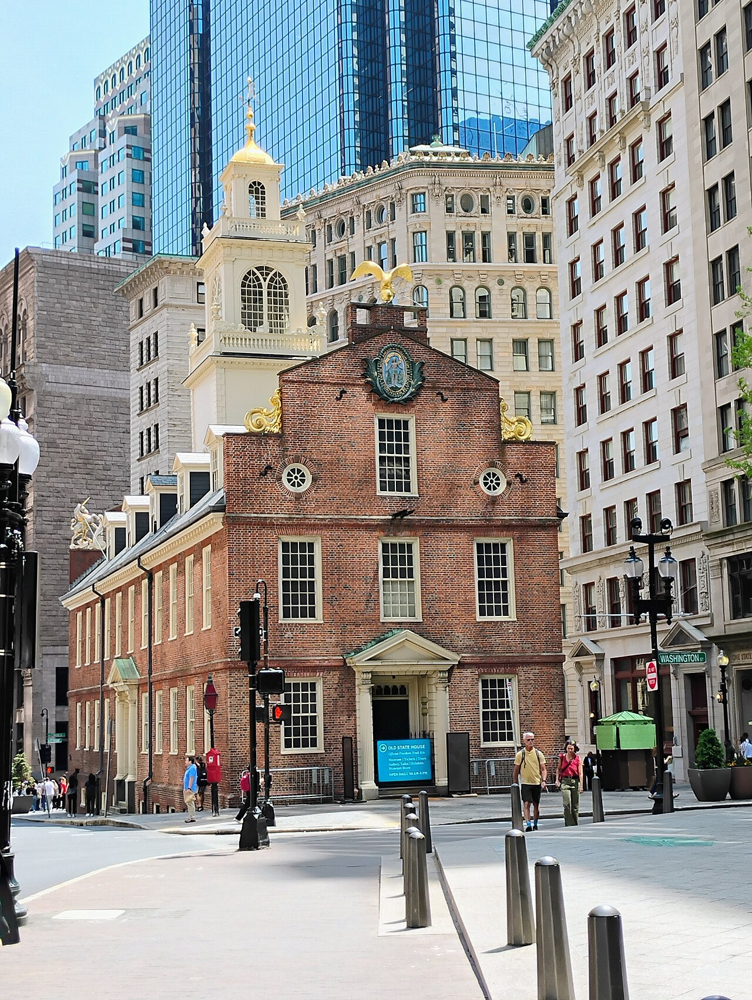

ACT I · 9/19—9/25New York，
第二次才開始。
已看過地標，這次把鏡頭降到街面：七天的飲食節奏、兩場 Broadway，以及每晚跨 Hudson 回 Weehawken 的現實。

Broadway
Brooklyn
Seven-day appetiteSTAYWeehawken · 朋友家
THEATREAladdin + MHE
RESERVED FOODSoothr · Moono · Keens
9/25 PLAN A朋友開車到 Boston
19SEP
SAT
DAY 01 · THE LANDING
今晚的勝利，就是抵達床上。
20:40 落地不等於 20:40 離開 JFK；跨河才是最後一關。
 The city waitsNight arrival
The city waitsNight arrival
Keep it simple
TomorrowTPE 17:40JFK T4 20:40入境＋行李Weehawken
BEFORE LANDING住址與聯絡方式存離線
朋友地址不要放公開網頁；存在手機備忘錄與截圖，連同晚間交通候選一起保留。
AFTER CUSTOMS大眾運輸或 rideshare 現場決定
帶大行李、夜間跨到 New Jersey，總時間比票價更重要。不要先買不可退的接駁。
LATE NIGHT附近吃，直接睡
Lincoln Harbor ferry 晚間約 21:30 收班，今晚本來就不把它當主方案。
PRIVATE公開版刻意不顯示朋友門牌。
FOOD熱、近、快；不是名店夜。
SUCCESS洗澡、充電、睡覺，就是滿分。
20SEP
SUN
DAY 02 · ALADDIN
一片 pizza 開場，一整座舞台接手。
13:00 是硬時間；散場後才讓 High Line 決定今天還能走多遠。
13:00 curtainJoe’s brunch
After the showVillage night Joe’s 11:00New Amsterdam 12:30Aladdin 13:00High LineVillage
12:30 前到 New Amsterdam TheatreMezzanine · Row JJ · Seat 107；約 2 小時 30 分含中場，預計 15:30 散場。
BRUNCHJoe’s 可以，時間要保守
把它當早午餐而不是餐廳行程；吃 slice、不要排過久，12:00 左右就往劇院。
AFTER 15:30High Line 由北往南
Hudson Yards／Chelsea 擇順手入口；Little Island 有體力才加，黃昏留給 Hudson。
DINNERShukette 若開放就訂
還沒開放不是缺口。訂不到時就近在 Chelsea／Village walk-in，不為一餐破壞第一天節奏。
21SEP
MON
DAY 03 · LOWER EAST SIDE
Katz’s 是午餐；Soothr 才是晚上的句點。
兩間重點店可以同天，但中間要留出六小時和一整個街區。

Katz’s lunchDowntown air
Neighborhood textureEat lightly laterBagel＋coffeeEssex MarketKatz’s lunchEast VillageSoothr 20:00
MORNINGBagel 只吃到剛好
沿 Lower East Side 慢慢進場。Essex Market 看街區脈絡，不需要每攤都吃。
LUNCHPastrami 是今天重量級主餐
份量通常很大；一個人吃不完很正常，下午用散步和咖啡留白。
20:00 · RESERVEDSoothr
已訂好。19:45 前到，下午不要再塞第二份重食；晚餐後直接規劃回 New Jersey。
22SEP
TUE
DAY 04 · BROOKLYN + CAFÉ CHINA
白天看 Brooklyn 過日子，晚上回 Manhattan 吃傾城。
L’Industrie 保留；傾城和 Moono 雖然近，拆成兩晚反而不會重複同一種晚餐密度。
Bedford AvenueWaterfrontL’IndustrieSlow afternoon Bedford AveL’IndustrieDomino ParkGreenpoint傾城 walk-in
LATE MORNING先逛，再吃 pizza
從 Bedford Avenue 慢慢走向水邊；午餐是路線的一部分，不需為拍照繞遠。
AFTERNOONDomino Park → Greenpoint
以河景、咖啡、店鋪為主。累了就縮短，不必一路走到每個公園。
DINNER · WALK-IN傾城一個人直接問位
線上最少兩位，不代表現場不收單人。避開最尖峰、先接受吧台／小桌；客滿就用附近備案。
23SEP
WED
DAY 05 · DOUBLE BILL
100 分鐘的浪漫之後，走去吃一席 Moono。
今天能成立，全靠 MHE 無中場、Moono 在附近，以及散場後不做任何多餘動作。
Broadway nightMidtownCho Dang GolOne tight night Cho Dang Gol lunch回去休息Belasco 18:30MHE 19:00Moono 21:15
20:40 散場後直接走；不要等 stage doorBelasco → Moono 約 15–20 分鐘步行。Center Mezz · Row F · Seat 107；Moono 已預付訂位。
LUNCHCho Dang Gol 放白天
朋友推薦不漏掉，也不與 Moono 搶同一個晚餐。吃完回去休息、換裝、充電。
19:00 · TICKETEDMaybe Happy Ending
約 100 分鐘、無中場。Ticketmaster mobile ticket 有 delayed delivery，演出前確認已出現在手機。
21:15 · PREPAIDMoono
已訂 1 位。遲到政策與取消退費以 SevenRooms 確認頁為準；當晚手機存好訂位畫面。
24SEP
THU
DAY 06 · MIDTOWN FINALE
讓歌聲開場，讓 Keens 關燈。
今天不遠征：所有東西都服務於 18:00 的七人晚餐。
Grand CentralEllen’s brunchKeep it lightKeens finale
Ellen’s brunchNYPLGrand Central休息Keens 18:00
BRUNCHEllen’s Stardust Diner
表演型體驗放白天，排隊也有緩衝。若現場過長，直接換附近早餐，不犧牲下午。
AFTERNOONNYPL＋Grand Central
室內、同區、可隨時縮短。午餐只吃小點，回去休息也比多塞一館值得。
18:00 · RESERVEDKeens · 7 位
這餐本身就是今晚活動。提早 10–15 分到，讓朋友聚會有完整開場。
25SEP
FRI
DAY 07 · ROAD NORTH
紐約不必完結；只要準時上朋友的車。
主方案已改為朋友開去 Boston。Shukette、Adel’s 與最後採買都只能服從接送時間。
Last New York view Boston aheadFlexible food
Boston aheadFlexible food
Meco tonight 彈性早餐收行李朋友會合Road tripMeco Hotel
PLAN A朋友開車 NYC → Boston
確認接人時間、地點與行李空間。Meco 已訂兩間房；到 Boston 後一起入住。
TWO CLEANUPSHI Boston 與 Train 176
朋友計畫不變就按各自期限取消。Amtrak 票可取消，不需要直接放棄或 no-show。
FOOD接送優先，名店其次
Shukette 只在訂位窗口與接送時間都合適時排；Adel’s 上次吃過，這次可以完全跳過。
DEADLINEHI Boston：9/22 23:59 EDT 前決定。
BACKUPTrain 176 19:12 → 23:50 仍有效，取消前都是保險。
STAYMeco Hotel · 與朋友同行、兩間房。